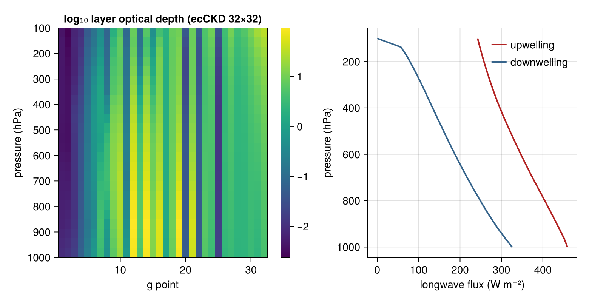

NumericalRadiation.jl
NumericalRadiation.jl is a standalone atmospheric radiation and gas-optics library compatible with ECMWF's ecRad/ecCKD data. It ingests reference ecCKD CKD-definition files into typed, Adapt.jl-aware look-up tables, evaluates g-point optical depths in a streaming gas-optics path that is allocation-free once warmed with caller-preallocated outputs, and solves clear-sky and all-sky two-stream column transport. It also bundles two analytic-band column schemes for intermediate-complexity models: the Williams (2026) 41-wavenumber clear-sky longwave and a SPEEDY-style one-band shortwave with diagnostic clouds.
Installation
using Pkg
Pkg.add(url = "https://github.com/NumericalEarth/NumericalRadiation.jl")Quickstart
Run a clear-sky longwave column with an reference ecCKD model. The CKD-definition files resolve through lazy artifacts on first use; arrays are ordered top-to-bottom (pressure increasing downward), and gas entries are layer column amounts in mol m⁻².
using NumericalRadiation
using NCDatasets # activates the NetCDF reader extension
gas_optics = read_reference_ecckd_gas_optics("32x32"; names = (:composite, :h2o, :co2))
g = 9.80665 # gravitational acceleration, m s⁻²
mᵈ = 0.0289647 # dry-air molar mass, kg mol⁻¹
N = 24
pᵢ = collect(range(10_000, 100_000; length = N + 1)) # Pa, TOA first
p = 0.5 .* (pᵢ[1:end-1] .+ pᵢ[2:end])
nᵈ = diff(pᵢ) ./ (g * mᵈ) # dry-air amount, mol m⁻²
atmosphere = ColumnAtmosphere(;
pressure_layers = p,
pressure_interfaces = pᵢ,
temperature_layers = collect(range(220, 295; length = N)),
temperature_interfaces = collect(range(215, 300; length = N + 1)),
gases = (composite = nᵈ, h2o = 0.005 .* nᵈ, co2 = 420e-6 .* nᵈ),
surface = (temperature = 300,),
geometry = (cos_zenith = 0.55,))
longwave_gpoints = length(gas_optics.longwave_weights)
shortwave_gpoints = length(gas_optics.shortwave_weights)
longwave = LongwaveOptics(zeros(longwave_gpoints, N), zeros(longwave_gpoints, N);
source_top = zeros(longwave_gpoints, N),
source_bottom = zeros(longwave_gpoints, N),
weights = zeros(longwave_gpoints))
shortwave = ShortwaveOptics(zeros(shortwave_gpoints, N);
weights = zeros(shortwave_gpoints))
fluxes = RadiativeFluxes(longwave_up = zeros(N + 1),
longwave_down = zeros(N + 1),
shortwave_up = zeros(N + 1),
shortwave_down = zeros(N + 1))
optical_properties!(longwave, shortwave, gas_optics, atmosphere)
surface_emission = surface_longwave_emission(gas_optics, 300)
radiative_fluxes!(fluxes, CloudlessLongwave(), longwave, atmosphere,
LongwaveBoundaryConditions(surface_longwave_up = surface_emission))
using Printf
@printf("outgoing longwave radiation (TOA): %6.1f W m⁻²\n", fluxes.longwave_up[1])
@printf("downwelling longwave at surface: %6.1f W m⁻²\n", fluxes.longwave_down[end])outgoing longwave radiation (TOA): 242.4 W m⁻²
downwelling longwave at surface: 325.6 W m⁻²The g-point optical-depth table the model evaluated, and the resulting flux profiles:
using CairoMakie
fig = Figure(size = (780, 400))
ax1 = Axis(fig[1, 1]; xlabel = "g point", ylabel = "pressure (hPa)",
yreversed = true,
title = "log₁₀ layer optical depth (ecCKD 32×32)")
hm = heatmap!(ax1, 1:longwave_gpoints, p ./ 100,
log10.(max.(longwave.optical_depth, 1e-8));
colormap = :viridis)
Colorbar(fig[1, 2], hm)
ax2 = Axis(fig[1, 3]; xlabel = "longwave flux (W m⁻²)",
ylabel = "pressure (hPa)", yreversed = true)
lines!(ax2, fluxes.longwave_up, pᵢ ./ 100;
color = :firebrick, linewidth = 2, label = "upwelling")
lines!(ax2, fluxes.longwave_down, pᵢ ./ 100;
color = :steelblue4, linewidth = 2, label = "downwelling")
axislegend(ax2; position = :rt, framevisible = false)
fig
The complete script, including the shortwave leg, is examples/ecckd_column.jl.
Where to go next
- Examples: single-column analytical radiation, the the staged interface, CO₂ forcing with ecCKD, and correlated-k model spread.
- Architecture — the API levels and the conventions they keep.
- Gas optics — ecCKD files, model selection, and the runtime workflow.
- Column solvers and cloud and aerosol optics — the solver stack; notation for symbol conventions.
- API reference — the exported interface, by subsystem.
- Validation — running the tests, and where the validation platform lives.